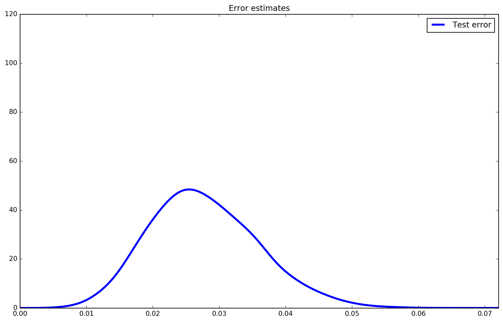

Aprendizagem Automática
3. Overfitting
Ludwig Krippahl
Overfitting
Summary
- Errors
- How to estimate the true error
- Overfitting and how to avoid it
- How to select the best model
- Regularization: reduce overfitting in training
Overfitting
Last Lecture
- Model fitting: find hypothesis by optimization (likelihood, least mean squares in linear regression)
- More powerful models in higher dimensions
- Nonlinear transformation for new features
Overfitting
Last Lecture

Overfitting
Last Lecture

Overfitting
Last Lecture
Overfitting
Errors
Errors
Measuring Errors
- Goal of regression: Find
g(θ,X):X→Y based on{(x1,y1),...,(xn,yn)} to predicty for any example ofU - Training Error: measured in the training set
- Problem: not a good indicator of the error for new examples
- Training set is used to adjust
θ to minimize error - This makes training error a biased estimate
Solution: measure error outside the training set
Errors
Measure error outside the training set
- Split the data: training set and test set to estimate
true error

Errors
Note: estimate is stochastic.
- We estimate the true error; we cannot measure it

Errors
- The
Test Error is an unbiasedestimate of theTrue Error

Errors
Measurable Errors
-
Training error : error measured in the training data and used to fit the parameters. - Also Empirical Error or Sample Error
-
Test error : error measured on the test data to estimate the true error.
Unmeasurable Errors
-
True error : expected error for allU . -
Generalization error : difference between True Error and Training error
Overfitting
Overfitting
Overfitting
- Increasing power, training error and test error eventually diverge:

Overfitting
- Underfitting: Error mostly because model cannot fit the data
Overfitting
- Underfitting example
Overfitting
- Overfitting: error mostly because model adapts too much

Overfitting
- Overfitting example
Overfitting
- Overfitting increases generalization error
Overfitting
Validation and Selection
Validation and Selection
- Not all models are alike
Validation and Selection
- Choose the lowest test error?
Validation and Selection
- Choose the lowest test error?
Validation and Selection
- Problem: choosing lowest makes test error biased.
Validation and Selection
Choosing best test error makes estimate biased
- We cannot use the test error to choose the best model
- This would no longer be a test error (it will be a biased estimate)
Solution: we need three sets
-
Training set to fit parameters and choose the best hypothesis in each hypothesis class. -
Validation set to choose best hypothesis class (model). -
Test set to estimate true error of the final hypothesis.
Note: we'll see better ways of doing this. For now it's the idea that matters
Overfitting
Regularization
Regularization
Two ways of dealing with overfitting:
- Model Selection:
- Pick model that best predicts outside training set (validation set).
- Regularization:
- Change learning algorithm to reduce overfitting.
Regularization: modify training to reduce overfitting
- Example: add penalty as a function of the magnitude of the parameters.
- Ridge regression:
Regularization
- Degree 15, different
λ values.
Overfitting
Example: GDP and Life Expectancy
Example
- Data on Life Expectancy vs per capita GDP for 2003
- http://www.indexmundi.com
1200 31.3 9000 32.26 800 35.25 3000 36.94 1900 36.96 600 37.98 ...
Example
- Large range of values...
Example
Numerical problems
- Large differences in value magnitudes can cause problems.
- Numerical instability
- Finding parameters
- Reproductibility of approach
- One simple solution:
- Rescale values to 0..1
- (We'll see more on this later)
Example
Preparing the data
- Load the data, rescale and split
- Total 180 countries: 90 for training, 45 for validation, 45 for testing
import numpy as np
def random_split(data,test_points):
"""return two matrices splitting the data at random
"""
ranks = np.arange(data.shape[0])
np.random.shuffle(ranks)
train = data[ranks>=test_points,:]
test = data[ranks<test_points,:]
return train,test
data = np.loadtxt('life_exp.csv',delimiter='\t')
scale=np.max(data,axis=0)
data=data/scale
train, temp = random_split(data, 90)
valid, test = random_split(temp, 45)Example
Find the best model (hypothesis class)
def mean_square_error(data,coefs):
"""Return mean squared error
X on first column, Y on second column
"""
pred = np.polyval(coefs,data[:,0])
error = np.mean((data[:,1]-pred)**2)
return error
best_err = 10000000 # very large number
for degree in range(1,9):
coefs = np.polyfit(train[:,0],train[:,1],degree)
valid_error = mean_square_error(valid,coefs)
if valid_error < best_err:
best_err = valid_error
best_coef = coefs
best_degree = degree
test_error = mean_square_error(test,best_coef)
print(best_degree,test_error)Example
- Selecting the best hypothesis
Example
Selecting the best hypothesis:
- Degree 3, Validation error:0.0150
- Note: error estimates depend on the (random) split
- Maybe we should average them? Later...
Example
Regularization
- Different approach: use a high degree polynomial (degree 10)
- But regularize the fit (with ridge regression)
In practice:
- The Scikit-learn library has a Ridge class to do ridge regression
- It's a linear model, but we can work with that by adding the necessary terms to our data
- Remember polynomial regression from last lecture
Example
- Loading and expanding the data to
x10
def expand(data,degree):
"""expands the data to a polynomial of specified degree"""
expanded = np.zeros((data.shape[0],degree+1))
expanded[:,0]=data[:,0]
expanded[:,-1]=data[:,-1]
for power in range(2,degree+1):
expanded[:,power-1]=data[:,0]**power
return expanded
orig_data = np.loadtxt('life_exp.csv',delimiter='\t')
scale=np.max(orig_data, axis=0)
orig_data=orig_data/scale
data = expand(orig_data,10)
train, temp = random_split(data, 90)
valid, test = random_split(temp, 45)Example
- Finding the best
λ
from sklearn.linear_model import Ridge
lambs = np.linspace(0.01,0.2)
best_err = 100000
for lamb in lambs:
solver = Ridge(alpha = lamb, solver='cholesky',tol=0.00001)
solver.fit(train[:,:-1],train[:,-1])
ys = solver.predict(valid[:,:-1])
valid_err = np.mean((ys-valid[:,-1])**2)
if valid_err<best_err:
best_err = valid_err
best_solver = solverExample
- Best
λ from validation error
Example
- Final result, degree 10 with regularization
Overfitting
Summary
Overfitting
Summary
- Error measures and estimates
- Training error, measured on training set
- Used to adjust parameters, so is biased estimate of true error
- Validation error, measured outside training set
- Used to choose model or hyperparameter, so becomes biased estimate of true error
- Test error, measured outside training set
- Never used to choose anything
- Is unbiased estimate of true error
- Error estimates are stochastic
- Model selection and Regularization
Overfitting
Further reading
- Bishop, Section 3.1
- Alpaydin, Sections 2.6-2.8
- Scikit-learn:http://scikit-learn.org/stable/modules/linear_model.html
Aprendizagem Automática
3. Overfitting
Ludwig Krippahl